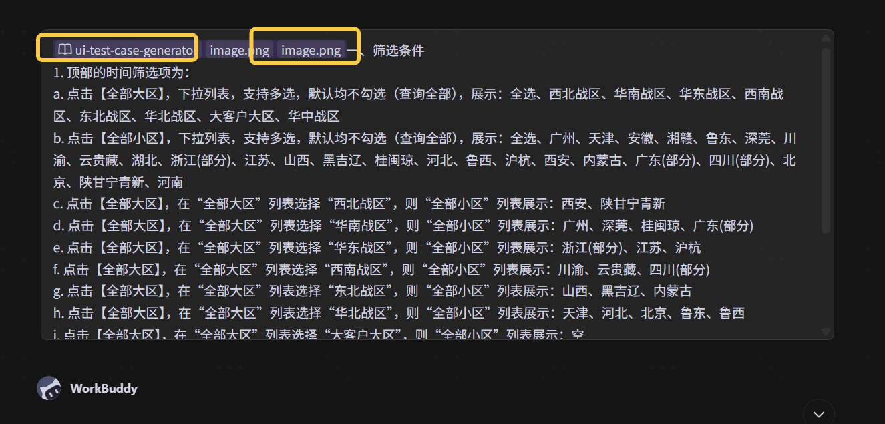
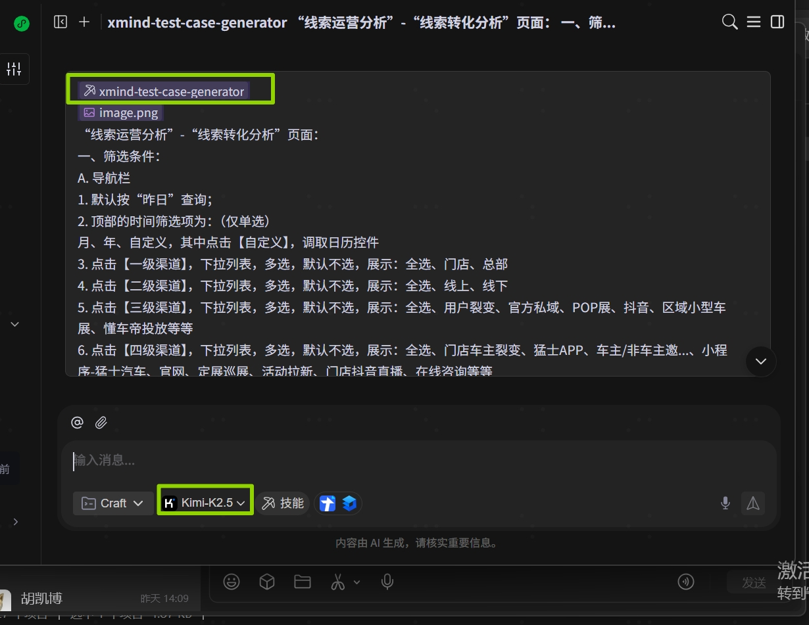
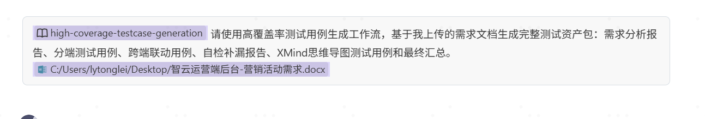

AI Testing Workbench · Method Guide
AI驱动的测试用例指南及要求
从需求、截图、提示词到 Excel / XMind 测试资产的完整生成与复核指南
AI 测试Prompt 模板WorkBuddyExcel 用例XMind复核标准数据脱敏
4类提示词使用场景
3种WorkBuddy 生成方式
9项通用复核标准
8步落地使用流程
使用路径
检查路径
1 文档说明
明确文档目标、适用范围与推荐工具，帮助测试人员快速判断该指南如何服务日常工作。
1.1 背景与目的
在日常测试工作中，编写测试用例往往占据测试人员大量时间。本文档旨在帮助团队成员（包括从未使用过AI的测试新手）通过AI快速、高质量地生成测试用例，从而将更多精力投入到用例评审、探索性测试和测试执行中，提升整体测试效率与质量。
1.2 适用范围
功能测试用例的设计与生成
适用于Web端/移动端界面功能测试
适用于有/无UI设计稿、有/无PRD文档等不同场景
1.3 推荐使用的AI工具
ChatGPT（若有科学上网条件）：https://chatgpt.com/
kimi：https://www.kimi.com/zh/
WorkBuddy：https://www.codebuddy.cn/work/
1.4 推荐使用路径选择
为了让从未使用过AI的测试人员快速上手，建议先根据手头材料和期望产物选择使用路径。
新手首次使用AI生成测试用例
推荐路径：优先使用第4章 WorkBuddy 技能/工作流
适用情况：不熟悉提示词写法，希望先获得稳定结构化输出
后续复核：统一按第5章复核
只需要 Excel/表格测试用例
推荐路径：ui-test-case-generator
适用情况：有业务/功能说明和截图，希望输出结构化表格用例
后续复核：统一按第5章复核
只需要 XMind 思维导图用例
推荐路径：xmind-test-case-generator
适用情况：需要按页面、模块、测试类型组织脑图
后续复核：统一按第5章复核
需要完整测试资产包
推荐路径：high-coverage-testcase-generation
适用情况：有较完整需求文档，需要分析报告、Excel、XMind、自检汇总
后续复核：统一按第5章复核
没有 WorkBuddy 或需要自定义提示词
推荐路径：第3章提示词模板
适用情况：需要手动控制提示词内容、输出细节或无法使用技能/工作流
后续复核：统一按第5章复核
路径选择原则：新手优先选择 WorkBuddy 技能/工作流；需要精细控制提示词、无法使用 WorkBuddy 或需要补充特殊业务约束时，再使用第3章提示词模板。无论选择哪条路径，AI输出结果均不得直接投入使用，必须按第5章进行人工复核。
2 使用前准备
准备需求、截图、页面路径、业务规则和测试重点，保证 AI 输入材料足够完整。
2.1 信息收集清单
在开始向AI发送提示词之前，请先准备好以下材料（有则准备，无则跳过）：
| 序号 | 材料类型 | 说明 |
| 1 | 实际界面截图 / 原型图 / UI设计稿 | 被测功能的实际页面截图，清晰完整 |
| 2 | PRD / 需求规格说明书 / 需求原型 | 包含功能逻辑、业务规则的文字描述 |
| 3 | 页面路径 | 从系统首页到被测功能的完整导航路径 |
| 4 | 业务流程说明（按需） | 当前功能在整个业务流程中的位置及上下游关系 |
| 5 | 历史缺陷记录（若有） | 该功能曾经出现过的Bug（可帮助AI生成更有针对性的反向用例） |
2.2 UI截图的拍摄建议
截图应完整展示被测界面，避免截取不全
若界面较长，请分多张截图并按顺序编号（如：截图1、截图2）
截图分辨率清晰，控件文字可辨识
若有弹窗、下拉选项等交互态，需额外截取交互展开状态的图片
3 使用场景与提示词模板
按材料类型选择提示词模板，覆盖有 PRD、有截图、仅截图、仅需求等常见场景。
场景选择指引：根据你当前手头掌握的材料，对照下表选择对应的使用场景和提示词模板。
先选择材料类型，再展开对应提示词模板
3.1 UI界面/原型图/UI设计稿与产品设计稿（需求原型/PRD/需求规格说明书）均存在时，参考使用的提示词模板如下：
使用说明：
使用该提示词生成测试用例时，应按照实际的需求、业务及场景等，调整下述提示词中的“说明”部分中的内容；
将被测试页面的界面截图连同调整后的提示词内容一起，发送给AI；
下述提示词内容中，标蓝字体应调整，未标蓝字体非特殊原因，不做改动；
# 角色： 你是一名中国资深的、专业的软件测试专家。擅长输出可直接落地执行的测试用例。 # 说明： “活动中心”功能相关界面布局及介绍： 一，“报名信息设置”界面（详见第1张上传的图片） 1. 在“报名信息设置”界面，展示： a."报名有效期":仅在该活动有效期内可以报名 b."限制参与用户身份":新注册用户定义为注册时间>活动开给时间;老用户定义为注册时间<活动开始时间 c."限制用户车主身份":非必填项,可多选。支付意向金用户至少有一个有效的已支付盲订或小订单;支付大定未锁单用户至少有一个有效的已支付但未锁单的大定订单。--20251024新增 d."限制用户会员等级":非必填项,展示所有会员等级,可多选 e."是否限制报名人数":是否限制该活动最大支持报名人数 e.1."报名人数上限":仅"是否限制报名人数"="限制"的时候,出现此设置项,输入正整数 f."是否限制报名门店":是否需要在C端展示门店信息 f.1."选择报名门店":仅"是否限制报名门店"="限制"的时候,出现此设置项,通过省市来选择门店,支持跨省市多选门店,支持全选门店 g."是否在线索平台创建线索":报名后是否将用户手机号传输给线索平台创建线索。若不限制报名门店,创建总部线索,若限制报名门店,则将线索下派到报名门店中 g.1."选择线索渠道":仅"是否在线索平台创建线索"="是"的时候,比出现此选项,选择三级渠道 h."是否允许取消报名":是否允许用户在报名成功后取消报名,取消报名的限制包括:若已过了报名结束时间、或报名设置了奖励,则不支持取消报名 i."报名信息":用户在报名的时候需要填写的信息 i.1.手机号为必填项,不可取消勾选 i.2.姓名、性别、意向车系、收件地址勾选后,则为必填项 i.3.【添加其他问题】点击后在下方新增问题,问题类型包括单选、多选、开放问题 i.4.单选问题和多选问题需要设置问题和选项(支持多个选项) i.5.开放问题只用设置问题,无需设置选项 # 需求 1. 请结合并根据上传的电脑端Web网页图片，针对"说明"内容，设计一份详尽的正向+反向的、完整的、详尽的测试用例，满足市面上的广大用户的实际操作要求； 2. 覆盖：功能、交互联动、UI界面测试； 3. 仅提供最终结果，不要做任何解释。 # 输出要求 1. 每条用例包含以下字段（按序）： - 测试点 - 优先级（高、中、低） - 前置条件 - 测试步骤（每步骤单独列出） - 预期结果（与测试步骤一一对应） 2. 页面控件一律用【】表示； 3. 页面/模块名称一律用""表示； 4. 用表格形式在线生成； 5. 表格中不得出现 <br> 标签；6. "测试步骤"列的写法规范：每一步骤必须独立成行，格式统一为"序号. 步骤内容"（如：1. xxx），每个步骤之间以换行符分隔，严禁将多个步骤用"；"拼接写在同一行； 7. "预期结果"列的写法规范：每条结果必须独立成行，格式统一为"序号. 结果内容"（如：1. xxx），每条结果之间以换行符分隔，严禁将多条结果用"；"拼接写在同一行； 8. 表格单元格内，凡含有多项内容（步骤或结果），一律逐行纵向排列，每项单独占据一行，不得横向连续书写。
AI输出测试用例后，需按第5章通用复核清单进行检查，不得直接投入使用。
3.2 场景二：UI界面 / 原型图 / UI设计稿与产品设计稿（需求原型、PRD、需求规格说明书等）均存在时，且规则更加细化，涉及按钮、控件及布局等，参考使用的提示词模板如下：
使用说明：
使用该提示词生成测试用例时，应按照实际的需求、业务及场景等，调整下述提示词中的“说明”部分中的内容；
将被测试页面的界面截图连同调整后的提示词内容一起，发送给AI；
下述提示词模板中，在“说明”部分增加被测试功能的页面路径及被测试功能的业务流程，应按照实际的需求、业务及场景等进行相应调整；
下述提示词内容中，标蓝字体应调整，未标蓝字体非特殊原因，不做改动；
# 角色： 你是一名中国资深的、专业的软件测试专家。擅长输出可直接落地执行的测试用例。 # 说明： “活动中心”功能相关界面布局及介绍： 一，在“活动中心”-“报名活动管理”-“报名活动列表”-“新建报名活动”界面中内容已填写完成，点击【下一步】，进入“活动基本设置”界面（详见第1张上传的图片） 二，在“活动基本设置”界面中展示，点击【下一步】，进入“报名信息设置”界面（详见第2张上传的图片） 1. 在“报名信息设置”界面，展示： a."报名有效期":仅在该活动有效期内可以报名 b."限制参与用户身份":新注册用户定义为注册时间>活动开给时间;老用户定义为注册时间<活动开始时间 c."限制用户车主身份":非必填项,可多选。支付意向金用户=至少有一个有效的已支付盲订或小订单;支付大定未锁单用户=z至少有一个有效的已支付但未锁单的大定订单。--20251024新增 d."限制用户会员等级":非必填项,展示所有会员等级,可多选 e."是否限制报名人数":是否限制该活动最大支持报名人数 e.1."报名人数上限":仅"是否限制报名人数"="限制"的时候,出现此设置项,输入正整数 f."是否限制报名门店":是否需要在C端展示门店信息 f.1."选择报名门店":仅"是否限制报名门店"="限制"的时候,出现此设置项,通过省市来选择门店,支持跨省市多选门店,支持全选门店 g."是否在线索平台创建线索":报名后是否将用户手机号传输给线索平台创建线索。若不限制报名门店,创建总部线索,若限制报名门店,则将线索下派到报名门店中 g.1."选择线索渠道":仅"是否在线索平台创建线索"="是"的时候,比出现此选项,选择三级渠道 h."是否允许取消报名":是否允许用户在报名成功后取消报名,取消报名的限制包括:若已过了报名结束时间、或报名设置了奖励,则不支持取消报名 i."报名信息":用户在报名的时候需要填写的信息 i.1.手机号为必填项,不可取消勾选 i.2.姓名、性别、意向车系、收件地址勾选后,则为必填项 i.3.【添加其他问题】点击后在下方新增问题,问题类型包括单选、多选、开放问题 i.4.单选问题和多选问题需要设置问题和选项(支持多个选项) i.5.开放问题只用设置问题,无需设置选项 “活动创建”功能流程介绍： 1. 在“新建报名活动”-“活动信息设置”界面填写活动基本设置内容，点击下一步 2. 在“新建报名活动”-“活动信息设置”-“报名信息设置”界面填写报名信息内容，点击下一步，进入“报名成功设置”页面 # 需求 1. 请结合并根据上传的电脑端Web网页图片，针对"说明"内容，设计一份详尽的正向+反向的、完整的、详尽的测试用例，满足市面上的广大用户的实际操作要求； 2. 覆盖：功能、流程、交互联动、UI界面测试； 3. 仅提供最终结果，不要做任何解释。 # 输出要求 1. 每条用例包含以下字段（按序）： - 测试点 - 优先级（高、中、低） - 前置条件 - 测试步骤（每步骤单独列出） - 预期结果（与测试步骤一一对应） 2. 页面控件一律用【】表示； 3. 页面/模块名称一律用""表示； 4. 用表格形式在线生成； 5. 表格中不得出现 <br> 标签；6. "测试步骤"列的写法规范：每一步骤必须独立成行，格式统一为"序号. 步骤内容"（如：1. xxx），每个步骤之间以换行符分隔，严禁将多个步骤用"；"拼接写在同一行； 7. "预期结果"列的写法规范：每条结果必须独立成行，格式统一为"序号. 结果内容"（如：1. xxx），每条结果之间以换行符分隔，严禁将多条结果用"；"拼接写在同一行； 8. 表格单元格内，凡含有多项内容（步骤或结果），一律逐行纵向排列，每项单独占据一行，不得横向连续书写。
AI输出测试用例后，需按第5章通用复核清单进行检查，不得直接投入使用。
3.3 场景三：仅有UI界面 / 原型图 / UI设计稿，无产品设计稿（需求原型、PRD、需求规格说明书等）时，参考使用的提示词模板如下：
使用说明：
使用该提示词生成测试用例时，应按照实际的需求、业务及场景等，手动补充填写及业务规则（若有）下述提示词中的“说明”部分中的内容；
将被测试页面的界面截图连同调整后的提示词内容一起，发送给AI；
下述提示词内容中，标蓝字体应调整，未标蓝字体非特殊原因，不做改动；
# 角色： 你是一名中国资深的、专业的软件测试专家。擅长输出可直接落地执行的测试用例。 # 说明： “XXX”功能相关界面布局及介绍： 1. 在“界面路径”-“界面路径”界面，展示：（详见第X张上传的图片） a. “按钮控件名称”：限制、约束条件...b. “按钮控件名称”：限制、约束条件... # 需求 1. 请结合并根据上传的电脑端Web网页图片，针对"XXX"界面内容，设计一份详尽的正向+反向的、完整的、详尽的测试用例，满足市面上的广大用户的实际操作要求； 2. 覆盖：功能、交互联动、UI界面测试； 3. 仅提供最终结果，不要做任何解释。 # 输出要求 1. 每条用例包含以下字段（按序）： - 测试点 - 优先级（高、中、低） - 前置条件 - 测试步骤（每步骤单独列出） - 预期结果（与测试步骤一一对应） 2. 页面控件一律用【】表示； 3. 页面/模块名称一律用""表示； 4. 用表格形式在线生成； 5. 表格中不得出现 <br> 标签；6. "测试步骤"列的写法规范：每一步骤必须独立成行，格式统一为"序号. 步骤内容"（如：1. xxx），每个步骤之间以换行符分隔，严禁将多个步骤用"；"拼接写在同一行； 7. "预期结果"列的写法规范：每条结果必须独立成行，格式统一为"序号. 结果内容"（如：1. xxx），每条结果之间以换行符分隔，严禁将多条结果用"；"拼接写在同一行； 8. 表格单元格内，凡含有多项内容（步骤或结果），一律逐行纵向排列，每项单独占据一行，不得横向连续书写。
AI输出测试用例后，需按第5章通用复核清单进行检查，不得直接投入使用。
3.4 场景四：仅有产品设计稿（需求原型、PRD、需求规格说明书等），无UI界面截图时，参考使用的提示词模板如下：
使用说明：
此场景下，AI无法"看图"，完全依赖文字描述进行推断，因此"说明"部分的内容越详细、越精确，AI生成的用例质量越高；
字段的类型、是否必填、联动规则、取值范围，务必在"说明"中逐一明确，不要留空；
下述提示词内容中，标蓝字体应调整，未标蓝字体非特殊原因，不做改动；
# 角色： 你是一名中国资深的、专业的软件测试专家。擅长输出可直接落地执行的测试用例。 # 说明： "XXX"功能相关需求描述： 1. 功能背景：（简述该功能的业务目标和使用人群） 2. 功能描述： a. "控件/字段名称"： - 字段类型：（文本输入框 / 下拉选择 / 单选 / 多选 / 日期选择器 / 开关等） - 是否必填：（必填 / 非必填） - 取值范围或限制规则：（如：正整数、不超过50字符、不得早于今日等） - 联动规则：（如：仅当XX字段选择"是"时，本字段才显示） b. "控件/字段名称"： （同上格式，逐一描述） 3. 操作流程：（描述用户完成该功能的操作步骤） # 需求 1. 请根据以上"说明"内容，设计一份详尽的正向+反向的、完整的、详尽的测试用例，满足市面上的广大用户的实际操作要求； 2. 覆盖：功能、交互联动、边界值、异常场景测试； 3. 仅提供最终结果，不要做任何解释。 # 输出要求 1. 每条用例包含以下字段（按序）： - 测试点 - 优先级（高、中、低） - 前置条件 - 测试步骤（每步骤单独列出） - 预期结果（与测试步骤一一对应） 2. 页面控件一律用【】表示； 3. 页面/模块名称一律用""表示； 4. 用表格形式在线生成； 5. 表格中不得出现 <br> 标签；6. "测试步骤"列的写法规范：每一步骤必须独立成行，格式统一为"序号. 步骤内容"（如：1. xxx），每个步骤之间以换行符分隔，严禁将多个步骤用"；"拼接写在同一行； 7. "预期结果"列的写法规范：每条结果必须独立成行，格式统一为"序号. 结果内容"（如：1. xxx），每条结果之间以换行符分隔，严禁将多条结果用"；"拼接写在同一行； 8. 表格单元格内，凡含有多项内容（步骤或结果），一律逐行纵向排列，每项单独占据一行，不得横向连续书写。
AI输出测试用例后，需按第5章通用复核清单进行检查，不得直接投入使用。
4 使用 WorkBuddy 技能/工作流生成测试用例
使用 WorkBuddy 技能或工作流生成 Excel、XMind 或完整测试资产包。
除直接编写提示词生成测试用例外，也可以在 WorkBuddy 中选择已上传的 Skill（技能）或工作流，让 AI 按固定规则生成 Excel 测试用例、XMind 测试用例或完整测试资产包。对于测试新手，推荐优先使用技能/工作流，因为它已经内置了角色设定、输出字段、覆盖范围和自检要求，能够减少重复编写长提示词的成本。
4.1 三种方式的适用场景
选择原则：如果只需要 Excel 表格用例，优先选择 ui-test-case-generator；如果只需要脑图结构用例，优先选择 xmind-test-case-generator；如果需求文档较完整、涉及多个页面、多端联动或需要同时交付 Excel 与 XMind，优先选择 high-coverage-testcase-generation。
4.2 使用 ui-test-case-generator 生成 Excel 测试用例
适用目标：根据 UI 截图、页面截图、原型图、业务说明、字段规则、联动逻辑或流程规则，生成结构化的功能测试用例，便于后续复制到 Excel 或测试管理工具中。
WorkBuddy 使用步骤：
1. 在 WorkBuddy 上选择模型：MiniMax。
2. 选择上传的技能：ui-test-case-generator。
3. 编写或复制需求文档中的业务/功能说明，重点写清页面名称、页面路径、字段规则、按钮操作、筛选条件、联动规则、异常规则和业务流程。
4. 上传对应的界面截图、页面截图或原型图；如页面较长，应按顺序上传多张截图。
5. 点击【发送】，等待 AI 输出测试用例。

图4-1 WorkBuddy 中使用 ui-test-case-generator 生成 Excel 测试用例的操作示例
输出检查要求：生成结果应包含测试点、优先级、前置条件、测试步骤、预期结果；测试步骤与预期结果必须一一对应；页面控件应使用【】表示；页面或模块名称应使用双引号表示；表格中不得出现 <br> 标签。
4.3 使用 xmind-test-case-generator 生成 XMind 测试用例
适用目标：当用例需要以思维导图方式组织，便于按页面、模块、测试类型、测试点逐层评审时，使用 xmind-test-case-generator。该技能会将测试用例组织为脑图结构，而不是普通表格。
WorkBuddy 使用步骤：
1. 在 WorkBuddy 上选择模型：MiniMax。
2. 选择上传的技能：xmind-test-case-generator。
3. 编写或复制需求文档中的业务/功能说明，重点写清页面结构、筛选项、默认值、按钮、弹窗、表格、图表、导出、权限和异常场景。
4. 上传对应的界面截图、页面截图或原型图。
5. 点击【发送】，等待 AI 生成 XMind 测试用例。

图4-2 WorkBuddy 中使用 xmind-test-case-generator 生成 XMind 测试用例的操作示例
输出检查要求：XMind 中应能按测试对象、页面/系统、模块、测试类型、用例分类、测试点查看用例；每个测试点下应包含编号后的测试步骤和对应预期结果；如需求或截图存在不明确内容，应保留【待确认】节点，不得直接忽略。
4.4 使用 high-coverage-testcase-generation 生成完整测试资产包
适用目标：当需求文档较完整，或需要一次性交付需求分析报告、Excel 测试用例、跨端联动用例、自检补漏报告、XMind 思维导图测试用例和最终汇总时，使用 high-coverage-testcase-generation。
WorkBuddy 使用步骤：
1. 在 WorkBuddy 上选择模型：MiniMax。
2. 选择上传的技能/工作流：high-coverage-testcase-generation。
3. 上传需求文档、需求原型、流程说明、UI截图等材料；如有多个文件，应一次性上传完整。
4. 在输入框中说明希望生成完整测试资产包，例如：请使用高覆盖率测试用例生成工作流，基于我上传的需求文档生成需求分析报告、分端测试用例、跨端联动用例、自检补漏报告、XMind 思维导图测试用例和最终汇总。
5. 点击【发送】，等待工作流按阶段生成结果。

图4-3 WorkBuddy 中使用 high-coverage-testcase-generation 生成完整测试资产包的操作示例
输出检查要求：应至少检查是否生成需求分析报告、分端 Excel 测试用例、跨端联动测试用例、自检报告、XMind 文件和最终汇总；Excel 与 XMind 的用例数量应保持一致；不明确内容应标记为【待确认】；基于测试经验推导的内容应有明确标识。
4.5 使用技能/工作流时的输入规范
为了让测试新手也能稳定获得高质量结果，输入内容应尽量完整、具体、可验证。建议至少包含以下信息：
页面/功能名称
填写建议：写清被测页面或功能的名称，页面/模块名称使用双引号表示。
页面路径
填写建议：写清从系统首页到被测页面的导航路径。
业务/功能说明
填写建议：说明该页面要解决什么业务问题、用户在页面上可以完成哪些操作。
字段与控件规则
填写建议：写清字段类型、是否必填、取值范围、默认值、格式限制、显隐联动、启用禁用规则。
操作流程
填写建议：写清新增、编辑、查询、保存、提交、审核、导入、导出、取消、返回等流程。
截图材料
填写建议：上传清晰完整的页面截图；弹窗、下拉、交互展开态应单独截图。
特殊关注点
填写建议：补充权限、跨端联动、数据一致性、边界值、异常输入、历史缺陷等重点。
如果只提供截图而没有文字说明，AI 可以识别页面元素并推导测试点，但业务规则容易缺失；如果只提供文字说明而没有截图，AI 可以生成业务用例，但 UI 展示、控件位置和交互态覆盖可能不足。因此，优先提供“业务/功能说明 + 截图/原型图”的组合。
4.6 生成结果统一复核要求
生成结果完成后，统一按第5章进行人工复核。
5 AI生成测试用例结果的通用复核与验收标准
统一 AI 输出结果的人工复核标准，确保生成内容可评审、可执行、可落地。
本章节适用于第3章提示词生成路径和第4章 WorkBuddy 技能/工作流生成路径。AI生成的测试用例不得直接投入使用，必须先完成本章节复核。
5.1 覆盖完整性检查
对照需求文档、原型图、UI截图和业务规则，逐项确认页面元素、字段规则、筛选条件、按钮操作、数据展示、权限控制、流程分支、异常提示、联动逻辑是否均已覆盖。
5.2 正向、反向、边界与异常检查
检查用例是否覆盖正常流程、错误输入、空值、超长、最小值、最大值、临界值、网络异常、权限异常、重复提交、数据为空等场景。
5.3 测试步骤可执行性检查
检查每条用例是否具备明确前置条件、测试数据、操作路径和执行步骤。若测试人员无法按步骤复现操作，则该用例需要补充或重写。
5.4 预期结果可验证性检查
预期结果必须具体、可观察、可判断，避免只写“正常”“成功”“显示正确”等笼统表述。必要时应明确页面提示、状态变化、数据变化、接口返回、消息通知或报表结果。
5.5 输出格式规范检查
检查AI输出是否符合文档要求的字段、层级、命名、编号、优先级和输出格式。Excel用例应便于执行和统计，XMind用例应便于评审和覆盖分析。
5.6 Excel 与 XMind 一致性检查
当同时生成Excel和XMind测试用例时，应检查二者的模块划分、测试点、用例数量、前置条件、优先级和预期结果是否一致，避免同一需求在不同产物中出现冲突。
5.7 待确认项与经验推导检查
AI根据上下文推导出的业务规则、字段枚举、权限逻辑、数据来源和异常处理方式，若需求文档未明确说明，必须标记为【待确认】，不得直接作为确定规则执行。
5.8 数据脱敏检查
检查AI输入和输出中是否包含真实用户信息、客户信息、账号密码、生产环境地址、内部密钥、车架号、手机号、身份证号等敏感数据。对外发送、共享或沉淀前必须完成脱敏。
5.9 人工补充与评审要求
AI生成结果只能作为初稿，测试人员必须结合业务经验、历史缺陷、生产问题、接口约束和系统联动关系进行补充。最终测试用例需经过人工走查或评审后，方可进入执行阶段。
| 复核维度 | 检查内容 | 不通过时处理方式 |
| 覆盖完整性检查 | 检查需求文档、原型图、UI截图、业务规则、字段规则、权限规则、流程分支是否均已转化为测试点；不得只覆盖页面展示或主流程。 | 补充缺失测试点，必要时重新提交更完整的需求信息给AI生成。 |
| 正向/反向/边界/异常检查 | 检查是否同时覆盖正常路径、错误输入、空值、超长、最小值、最大值、临界值、网络异常、权限异常、重复提交等场景。 | 按遗漏类型补充用例，并标记新增原因。 |
| 步骤可执行性检查 | 检查前置条件、操作步骤、测试数据、页面入口、按钮名称、字段名称是否清晰，测试人员是否能按步骤直接执行。 | 将笼统描述改为可操作步骤，补齐页面入口和测试数据。 |
| 预期结果可验证性检查 | 检查预期结果是否能通过页面提示、状态变化、数据落库、接口返回、消息通知、日志或报表结果进行验证。 | 把“正常”“成功”等模糊表述改为具体可观察结果。 |
| 格式规范检查 | 检查Excel、XMind或其他输出是否符合文档要求的字段、层级、命名、编号和输出格式。 | 按模板字段和层级重新整理，不得交付结构混乱的AI原始输出。 |
| Excel/XMind一致性检查 | 当同时生成Excel与XMind时，检查模块、测试点、用例数量、优先级、前置条件和预期结果是否一致。 | 以需求覆盖为准统一两类产物，避免脑图和表格表达冲突。 |
| 待确认项检查 | 检查AI推断、需求缺失、规则不明确、字段枚举不完整等内容是否明确标记为【待确认】。 | 不得把未确认内容当作确定规则；需提交产品、开发或业务确认。 |
| 数据脱敏检查 | 检查是否包含真实手机号、身份证号、客户信息、车架号、账号密码、生产环境地址、内部密钥等敏感信息。 | 替换为脱敏数据或示例数据后再流转和评审。 |
| 人工补充与评审要求 | 测试人员需结合业务经验补充AI遗漏场景，并组织或参与用例评审，确认用例可执行、可追踪、可维护。 | 评审未通过不得进入执行阶段；修改后重新复核。 |
复核结论建议分为：通过、补充后通过、退回重新生成。若存在需求不明确或AI推断内容，必须在用例中标记【待确认】，并在评审前完成确认或说明风险。
6 提示词编写技巧与注意事项
通过高质量提示词和多轮追问提升用例生成质量。
6.1 提示词质量直接影响用例质量
好的提示词 vs 差的提示词对比示例：
| 对比维度 | ❌ 差的写法 | ✅ 好的写法 |
| 字段描述 | 有个报名人数输入框 | 【报名人数上限】输入框：仅当【是否限制报名人数】选择"限制"时显示，输入值必须为正整数 |
| 业务规则 | 用户可以取消报名 | 当已过报名结束时间，或报名设置了奖励时，不支持取消报名；其余情况允许取消报名 |
| 联动说明 | 选门店 | 仅当【是否限制报名门店】选择"限制"时，才出现【选择报名门店】控件，支持跨省市多选，支持全选 |
| 范围说明 | 生成测试用例 | 生成正向+反向的、完整的、详尽的测试用例，覆盖功能、交互联动、UI界面测试 |
核心原则：你给AI的信息越准确、越具体，AI输出的用例就越有价值。"垃圾进，垃圾出"。
6.2 多轮对话的使用技巧
当AI第一轮生成的用例质量不够理想时，不必重新开始，可以使用追问的方式持续优化：
| 常见问题 | 追问示例 |
| 反向用例太少 | 请针对上述测试用例，补充更多反向测试场景，尤其是边界值、异常输入、权限限制等 |
| 某个功能点覆盖不足 | 请针对【XXX】控件，单独补充更详尽的测试用例 |
| 用例粒度太粗 | 请将上述测试用例中，优先级为"高"的用例，拆解得更细化，每个测试步骤只做一件事 |
| 想增加特定测试类型 | 请额外补充针对该页面的性能感知测试用例（如大量数据加载、网络慢速下的表现） |
| 用例数太少 | 针对上述你提供的测试用例，还有补充的吗？ |
7 使用流程总览
以步骤化流程串联准备、生成、复核、修订和导入测试资产的完整过程。
01
第一步
确认被测功能范围
02
第二步
根据材料情况，对照"3使用场景"或"4使用 WorkBuddy 技能/工作流生成测试用例"选择对应方式
03
第三步
准备截图（如有），按照"2.2 截图建议"进行截取
04
第四步
按实际需求填写提示词"说明"部分（参考"5.1 技巧对比"），或在 WorkBuddy 中选择对应技能/工作流并上传材料
05
第五步
将提示词 + 截图（如有）一起发送给AI
06
第六步
阅读AI输出的测试用例，按需追加追问（参考"5.2 多轮对话"）
07
第七步
进行人工走查或用例评审
08
第八步
修订完善后，导入测试管理工具（如 Jira / Excel 等）正式使用
8 重要注意事项
强调人工复核、数据脱敏和批判性使用 AI 的底线要求。
务必保持批判态度：AI不了解你的系统上下文，它生成的用例是基于你提供的信息推断的，不可盲目信任；
人工走查不可省略：对AI生成的测试用例的最终结果，请务必保持怀疑态度，通过人工走查和用例评审等方式，确保生成内容对测试工作有实际价值；
提示词质量决定输出质量：若提供给AI的被测试内容肤浅而宽泛，或者我们对被测试内容理解有限，则AI输出的用例结果也会受到限制和制约；相反，提供更准确、更具体的被测试内容提示词，输出的结果则会更好；
不要一次性覆盖所有功能：建议按页面或功能模块拆分，分批次生成，确保每次生成的用例聚焦且完整；
AI生成的用例是起点，不是终点：AI帮你解决了"从0到1"的效率问题，真正懂业务的测试用例补充和优化，仍需依赖你对产品的深入理解；
向AI提供内容时，须严格进行数据脱敏：在使用AI工具辅助生成测试用例的过程中，禁止将任何真实的业务数据、用户信息、系统接口信息等敏感内容直接提供给AI。具体要求如下：
敏感信息类型禁止提供的内容示例脱敏处理方式用户个人信息真实姓名、真实手机号、真实身份证号、真实收货地址替换为虚构示例，如：张三、1381234XXXX、420XXXXXXXX系统接口信息真实接口地址、接口参数、Token、AppKey、AppSecret替换为占位符，如：/api/xxx/xxx、token=XXXXXXXX业务数据真实订单号、真实车架号（VIN）、真实合同编号替换为示例编号，如：ORDER_XXXX、VIN_XXXX系统账号信息真实测试账号、真实密码、真实管理员账号替换为示例，如：test_user_01、password_XXX公司内部信息内部系统域名、内网IP地址、数据库连接信息替换为占位符，如：xxx.internal.com、192.168.X.X截图中的敏感内容截图中包含真实用户数据、真实订单信息的区域上传前对截图中的敏感区域进行打码或遮盖处理
特别提醒：
在向AI发送截图时，须提前检查截图中是否含有真实业务数据。若截图中存在真实手机号、真实用户姓名、真实订单数据等敏感内容，必须使用图片编辑工具对相关区域打码或遮盖后再上传，切勿以"只是测试用"为由忽略此步骤。数据安全是底线，不因使用便利而妥协。